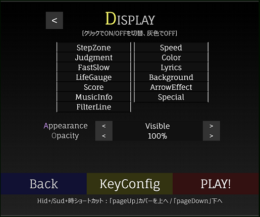

譜面が複数あれば、変更することができます。
(Set the charts if the works have multiple charts.)
1x から 10x の間で矢印の流れる速度を変更できます。
※譜面により、これ以上(以下)の速度で矢印が流れてくる場合があります。
(Set the speed of the sequences between 1x and 10x.)
矢印の速度を一定ではなく、変動させるモーションをつけるか設定します。
(Set the motion of sequences to make it faster or slower on the way.)
| 種類 | 内容 |
|---|---|
| OFF | 変化なし (Same speed from beginning to end) |
| Boost | 初めは初速、ステップゾーンに近づくにつれて速くなる (Initially initial speed, faster as it gets closer to the step zone) |
| Brake | 初めは速く、ステップゾーンに近づくにつれて初速になる (Initially fast, and becomes initial speed as it gets closer to the step zone) |
矢印の流れる向きを設定します。
(Set the flow direction of the sequences.)
| 種類 | 内容 |
|---|---|
| OFF | 下から上へ流れます。 両方にステップゾーンがある場合は一部上から下へも流れます。 (Generally, it flows from bottom to top.) |
| ON | 上から下へ流れます。 両方にステップゾーンがある場合は、OFFの状態に対してそれぞれ逆になります。 (Generally, it flows from top to bottom.) |
譜面を左右反転したり、ランダムにします。
ランダムにした場合は別譜面扱いとなり、ハイスコアは保存されません。
(Flip the sequences left or right or make it random.
If you make it random, it will be treated as another sequences, and the high score will not be saved.)
| 種類 | 内容 |
|---|---|
| OFF | 変化なし |
| Mirror | 譜面をグループレーンごとに左右反転する。 (Flip the sequences horizontally for each group lane.) |
| Random | 譜面をグループレーンごとにランダムに再配置する。 (Rearrange the sequences randomly for each group lane.) |
| Random+ | 譜面をグループに関係なくレーンごとにランダムに再配置する。 (Rearrange the sequences randomly for each lane regardless of the group.) |
| S-Random | 譜面をグループごとに矢印個別にランダムに再配置する。 (Arrange the sequences randomly for each group by arrows.) |
| S-Random+ | 譜面をグループに関係なく矢印個別にランダムに再配置する。 (Arrange the sequences randomly regardless of the groups and arrows individually.) |
オートプレイにするかどうかを設定します。
オートプレイ時はハイスコアを保存しません。
(Set whether to play auto play.
High score is not saved during auto play.)
クリア条件を設定します。
Dancing☆Onigiri (CW Edition)の場合、
クリア条件設定は譜面により大きくライフ制ゲージ・ノルマ制ゲージに分かれます。
詳細は下記の通りです。
(Set the clear condition. The details are as follows.)
■ ライフ制ゲージ（回復・ダメージ固定） / Life-Left Mode
| 種類 | 概要 |
|---|---|
| Original | 回復・ダメージ量固定のデフォルトゲージです。 (Default) |
| Light | Originalと同じですが、Originalよりも回復量が大きくなっています。 (Same as Original, but with greater recovery than Original) |
| NoRecovery | ゲージが最初からMAXの状態で開始しますが、回復しません。 (The gauge starts from the beginning in the state of MAX but does not recover.) |
| SuddenDeath | 1ミス(ウワァン/イクナイ)で終了するモードです。 (It is a mode to end with 1 mistake.) |
■ ノルマ制ゲージ（回復・ダメージ変動） / Norm Mode
| 種類 | 概要 |
|---|---|
| Normal | ノルマ制ゲージが指定された場合のデフォルトゲージです。 目標ノルマ到達でクリアです。 (It is clear by reaching the target quota at the end of the play.) |
| Easy | Normalと同じですが、Normalよりも回復量が大きくなっています。 (Same as Normal, but with greater recovery than Normal) |
| Hard | ゲージが最初からMAXの状態で開始しますが、回復量が微小でダメージ量が大きいモードです。 最後までゲージが残っていればクリアです。 (The gauge starts from the beginning in the state of MAX, but it is a mode with a small amount of recovery and a large amount of damage. It is clear if the gauge remains to the end.) |
| SuddenDeath | 1ミス(ウワァン/イクナイ)で終了するモードです。 (It is a mode to end with 1 mistake.) |
タイミングにズレを感じる場合、数値を変えることでズレを直すことができます。
(If you feel a gap in timing, you can correct the gap by changing the value.)
譜面を途中から再生します。
途中から開始した場合はハイスコアを保存しません。
(Play the music from the middle.
High score is not saved if you start from the middle.)
ゲーム内の音量を設定します。
(Set the in-game volume.)

キーコンフィグ対象の矢印群を切り替えます。
Dan★Oniでは、1つの矢印に2つ以上のキーを割り当てることが可能な場合があり、
この場合は左上の「ConfigType」を「Replaced」「ALL」にすることで変更が可能です。
(Switches sequences for key configuration.
DanOni may be able to assign more than one key per sequence,
In this case, you can change it by setting "ConfigType" on the top left to "Replaced" or "ALL".)
矢印色の配色パターンを変更できます。
(You can change the color scheme of the arrow color.)
キーコンフィグの配列パターンを変更します。
「前回のキーコンフィグパターン」→「パターン1」(→「パターン2」→・・・)
の順に切り替わります。
(Change the array pattern of key configuration.
"Previous key configuration pattern" → "pattern 1" (→ "pattern 2" → ...)
It changes in order of.)
キーコンフィグのキー配列をデフォルトのキーパターンに戻します。
(Restore key configuration key layout to default key pattern.)